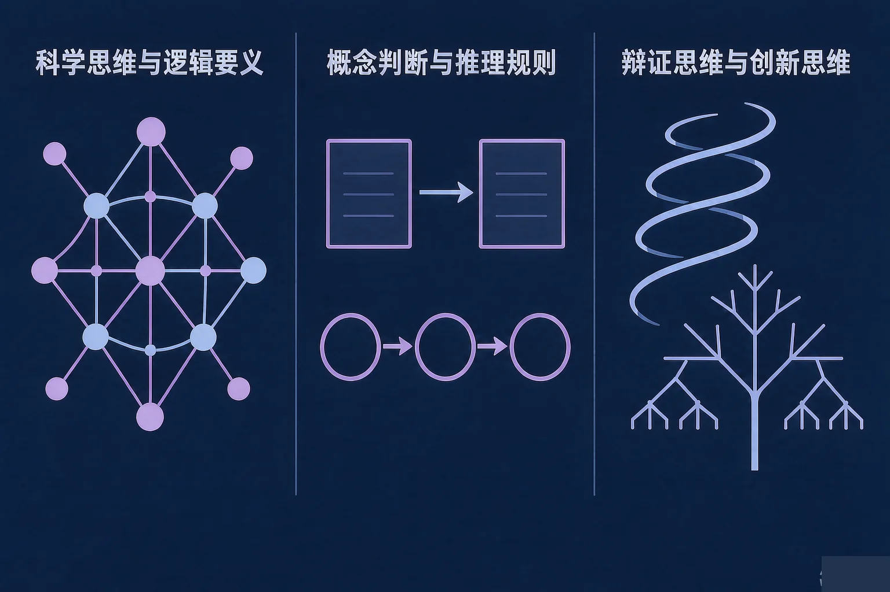
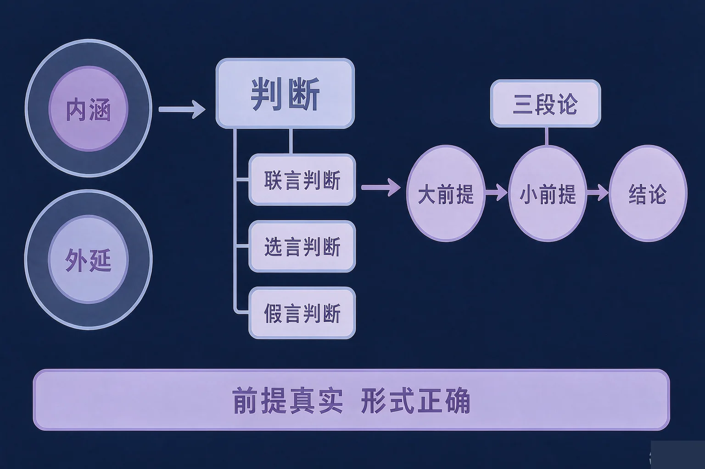
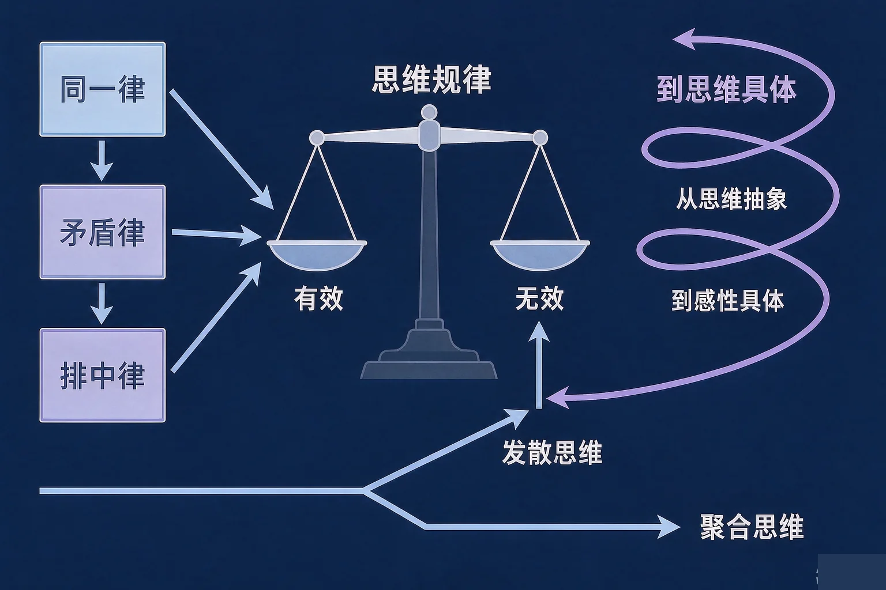

Gallery
v1.0.0 · skill v7.22.0
高中高三 · 逻辑与思维
一个推理到底有没有效，一条说法到底违反了哪条逻辑规律？

选一个你真正想弄清的问题，后面的活动都会围着它转。
选择或输入后，这节课会围绕你的问题展开。
先凭直觉选一个，选完立刻看到解释——错了也没关系，正好知道要重点听哪里。
1. 「所有金属都能导电，铜能导电，所以铜是金属。」这个推理：
三段论要求中项在前提中至少周延一次。这里的中项「能导电的」在两个前提中都是肯定判断的谓项，都不周延，因此形式不正确。错因提醒：最常见的是把「结论事实上正确」误认为「推理有效」——推理的有效性看的是形式，不是结论碰巧对不对。
2. 「如果下雨，地面就会湿；现在地面湿了，所以下雨了。」这个推理：
充分条件假言推理只能肯定前件就要肯定后件、否定后件就要否定前件；肯定后件是不允许的。地面湿也可能是别的原因。错因提醒：容易把「如果……就……」误认为「只有……才……」——充分条件与必要条件搞混，是这一课最高频的常见错误。
3. 关于同一律、矛盾律、排中律，下面哪一句表述准确？
矛盾律讲的是「不能同真、必有一假」，违反它犯自相矛盾；排中律讲的是「不能同假、必有一真」，违反它犯两不可（骑墙居中、模棱两可）。错因提醒：把矛盾律与排中律搞混是这一课的典型错误——一个管「不能同真」，一个管「不能同假」，方向正好相反。
为什么要先弄清这一件事？
我们每天都要下判断、讲道理（And）；但真要说清「这句话为什么推得住、那句话为什么推不住」，我们往往只有感觉，说不出依据（But）；所以这节课先把思维、概念与判断这一段看清（Therefore）。
思维的特征
思维具有间接性、概括性和能动性：它能凭借已有知识，透过现象把握事物的内在联系，并指导人们改造世界。
科学思维
科学思维追求认识的客观性，其结果具有预见性和可检验性；形式逻辑研究概念、判断、推理这些思维形式及其基本规律。

概念的内涵与外延
内涵是概念所反映的事物的本质属性，外延是概念所反映的那一类事物。一个概念的外延越大，它的内涵就越少；外延越小，内涵越多。明确概念的方法主要有两种：定义用来明确内涵，划分用来明确外延。
判断的类型与真假
简单判断包括性质判断和关系判断；复合判断包括联言判断、选言判断和假言判断。联言判断全真才真；相容选言判断至少有一个选言支为真才真；不相容选言判断恰好有一个选言支为真才真；假言判断分为充分条件、必要条件和充分必要条件三种。
三个高频错误：一是把「外延越大内涵越多」搞混了，正确的方向是外延越大、内涵越少；二是把误认为「同一个词就是同一个概念」，例如把哲学意义上的「物质」和具体物体意义上的「物质」当成一回事，这正是三段论中「四概念」错误的来源；三是把相容选言判断与不相容选言判断搞混，前者「至少一真」，后者「恰好一真」。
🔍 深层理解 换个角度再看一遍这件事，看看能不能说出背后的原理。
看见它：同一段话里，「物质」「人民」「公民」这些词可能指的不是同一件事；先分清概念，才谈得上说清道理。
拆开它：分析一个推理，先数一数有几个不同的项，再看中项有没有周延，最后看是充分条件还是必要条件假言推理。
迁移它：「内涵与外延的方向相反」在生活里也能用：你给一个词下的限定越多，它能指的对象就越少。
先点一组前提与结论，再判断这个推理是否有效；如果无效，请判断问题出在哪里。
先点上面一组前提与结论。
为什么要弄清这两段？
我们已经知道概念要准确、判断要清楚（And）；但一个推理怎样才能必然推出结论、一条说法违反了哪条逻辑规律、思维又该怎么既有辩证性又有创造性（But）；所以这节课要把这两段一起看清（Therefore）。

三个必须避开的错误：一是把矛盾律与排中律搞混——矛盾律讲「不能同真、必有一假」，排中律讲「不能同假、必有一真」，两者方向正好相反；二是误认为「演绎推理只要形式正确结论就一定真实」，前提真实和形式正确两个条件缺一不可；三是把「充分条件」与「必要条件」搞混，从而在假言推理中使用不允许的肯定后件或否定前件。
🔍 深层理解 换个角度再看一遍这件事，看看能不能说出背后的原理。
看见它：「如果下雨地面就湿」和「只有下雨地面才湿」，两句话长得像，推出的结论却完全不同。
比较它：同一律管的是「别把论题换了」，矛盾律管的是「别同时肯定互相否定的两个说法」，排中律管的是「别同时否定互相矛盾的两个说法」。
迁移它：「先发散再聚合」不只用于解题：写作文先列出各种想法，再挑出最合适的一条，就是发散思维与聚合思维的配合。
先点一条说法或推理，再判断它违反了哪一条逻辑基本规律，或者属于哪一类形式问题。
先点上面一条说法或推理。
情境：某校逻辑学习小组整理出五条表述，准备做成一期思维方法专栏。请你当一次校对员，判断哪几条准确、哪几条必须改，并说明依据。
为什么第三条最容易写偏？
因为「矛盾律」和「排中律」的名字很接近，容易只记住「逻辑规律都要求态度明确」。其实两者方向相反：矛盾律管的是「不能同真、必有一假」，排中律管的是「不能同假、必有一真」。把方向记反了，表述就写反了。
还有两处容易搞混：一是以为「形式正确结论就真」，忽略了前提真实这个条件；二是把不完全归纳推理与完全归纳推理误认为一样可靠——只有完全归纳推理的前提列举了全部对象，结论才是必然的。
先凭直觉选一个，选完立刻看到解释——错了也没关系，正好知道要重点听哪里。
1. 「如果地面湿了，就一定下过雨。」这一说法的问题在于：
「如果下雨，地面就会湿」讲的是充分条件，只能由「下雨」推「地面湿」，不能由「地面湿」反推「下雨」；这种肯定后件的推理形式不正确。错因提醒：常见错误是把充分条件与必要条件搞混，或者把形式问题误认为前提问题。
2. 关于三段论，下面哪一句表述准确？
三段论只能有三个不同的项，中项在前提中至少周延一次，前提中不周延的项在结论中不得周延；违反这些规则就是形式不正确。错因提醒：容易把「结论事实上正确」误认为「推理有效」。有效性看形式，可靠性才要同时看前提真实与形式正确。
3. 关于辩证思维与创新思维，下面哪一句表述准确？
辩证思维要求用联系、发展、全面的观点看问题，坚持分析与综合的辩证统一，把握量变与质变、坚持适度原则；创新思维要善于联想、多路探索、力求超前，把发散思维与聚合思维结合起来。错因提醒：两个常见错误要避开：一是把分析与综合误认为互不相干；二是误认为创新思维没有可学的方法。
先点一条情境，再判断它主要落在哪一个知识模块上。六条都归完类，你就得到了一张逻辑与思维知识地图。
先点上面一条情境。
把你的判断写下来：
从六条情境里挑一条你最有感触的，用自己的话写一写：它落在哪个模块、体现了哪一条逻辑要求，为什么？
先凭直觉选一个，选完立刻看到解释——错了也没关系，正好知道要重点听哪里。
1. 有人把「外延越大，内涵越多」当成正确的说法。准确的认识是：
内涵是概念所反映的事物的本质属性，外延是概念所反映的那一类事物；一个概念的外延越大，它的内涵就越少，外延越小，内涵越多。错因提醒：常见错误是把外延与内涵的变化方向搞混，以为两者同向变化。
2. 某研究者只观察了本地的部分样本，就得出「所有同类对象都具有这一属性」的结论。这一推理：
归纳推理是从个别性前提推出一般性结论的推理；前提只考察了部分对象，就是不完全归纳推理，结论是或然的。只有完全归纳推理的前提列举了全部对象，结论才是必然的。错因提醒：容易把不完全归纳推理误认为完全归纳推理，或者把归纳推理与演绎推理搞混。
3. 某同学解决问题时，先反过来想「如果要把这件事做砸，会怎么做」，再据此调整方案。这主要体现了：
逆向思维是创新思维多路探索的重要方法，通过从事物的反面思考，能够发现被忽略的问题和新的解决思路。错因提醒：常见错误是把「反过来想」误认为「前后矛盾」。逆向思维是一种有意的思考方法，与自相矛盾完全不同。
一句口诀：思维间接又概括，透过现象见本质；内涵外延方向反，定义划分各管一；前真式对才必然，三段论只三个项；中项周延不可少，归纳类比结论或然；同一律守论题稳，矛盾律忌同真，排中律忌同假。
给别人讲一遍：请用「前提真实」「形式正确」「同一律」这三个词，给同学讲清楚：怎样判断一段推理站不站得住，怎样发现自己说的话里藏着的逻辑毛病。
再动一动手：记一记你最近听到的一段议论（可以是广告、可以是日常争论），写清它有没有犯逻辑错误，依据是哪一条要求。
三层练习，做完第一、二层就算通关；第三层留给愿意继续探索的同学。
⭐ 基础巩固（必做）
⭐⭐ 能力应用（必做）
⭐⭐⭐ 迁移挑战（选做）
左边是学它之前要先会的，右边是学会之后可以继续探索的，下面是同一领域的伙伴知识。
图谱正在加载：首次进入需下载知识索引（约 1–3 秒），加载完成后本行会自动消失。